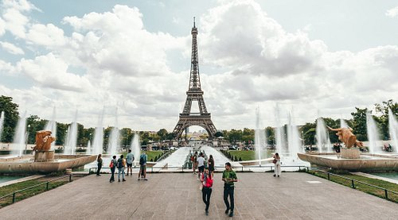
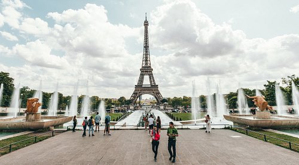

Commencez à organiser Paris
Créez un voyage pour enregistrer et organiser toutes vos idées et les visualiser sur une carte.

 

Aucun autre endroit au monde ne fait autant rêver que Paris. La ville séduit par son art, son architecture, sa culture et sa cuisine, mais il y a aussi des merveilles plus discrètes qui n’attendent qu’à être explorées : les ruelles pavées pittoresques, les pâtisseries au coin de la rue et les petits bistrots douillets qui vous invitent à boire un verre de beaujolais. Préparez-vous à vous approprier Paris.
Créez un voyage pour enregistrer et organiser toutes vos idées et les visualiser sur une carte.

Des lieux à voir, des rues à explorer et des expériences emblématiques à Paris.
Tout afficher
Tours et plateformes d'observation, Monuments & Points d'intérêt

Bâtiments architecturaux, Musées d'art

Bâtiments architecturaux, Sites historiques

Musée spécialisés

Bâtiments architecturaux, Sites historiques

Bibliothèques, Grands magasins

Musée d'art

Antiquaires, Marchés aux puces & Marchés de rue Saint-Ouen, France À 5,4 kilomètres de Paris
Églises et cathédrales